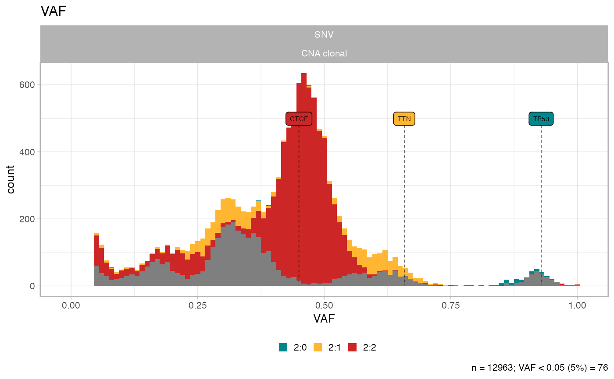

Title
subset_by_minimum_CCF(x, min_target_CCF = 0.1)
| x | |
|---|---|
| min_target_CCF |
x = init(snvs = example_dataset_CNAqc$snvs, cna = example_dataset_CNAqc$cna, purity = example_dataset_CNAqc$purity)#> [ CNAqc - CNA Quality Check ] #>#> ℹ Using reference genome coordinates for: GRCh38.#> ℹ Drivers are annotated, but 'gene' column is missing, using mutation location.#> ! Missing CCF column from CNA calls, adding CCF = 1 assuming clonal CNA calls.#> ℹ Input n = 12963 mutations for 267 CNA segments (267 clonal, 0 subclonal)#>#> ✔ Mapped n = 12963 mutations to clonal segments (100% of input)#> [ CNAqc ] n = 12963 mutations in 267 segments (267 clonal + 0 subclonal). Ge#> #> 2:2 [n = 7478, L = 1483 Mb] ■■■■■■■■■■■■■■■■■■■■■■■■■■■ { CTCF } #> 4:2 [n = 1893, L = 331 Mb] ■■■■■■■ #> 3:2 [n = 1625, L = 357 Mb] ■■■■■■ #> 2:1 [n = 1563, L = 420 Mb] ■■■■■■ { TTN } #> 3:0 [n = 312, L = 137 Mb] ■ #> 2:0 [n = 81, L = 39 Mb] { TP53 } #> 16:2 [n = 4, L = 0 Mb] #> 25:2 [n = 2, L = 1 Mb] #> 3:1 [n = 2, L = 1 Mb] #> 106:1 [n = 1, L = 0 Mb] #> 26:2 [n = 1, L = 0 Mb] #> 99:1 [n = 1, L = 0 Mb] #>#> ℹ Sample Purity: 89% ~ Ploidy: 4.#>#> Warning: Removed 8 rows containing missing values (geom_bar).#>#> ── Cutoffs table for minimum CCF 0.1 ───────────────────────────────────────────#> # A tibble: 12 x 5 #> karyotype n VAF_cutoff VAF_minimum any_to_filter #> <chr> <table> <dbl> <dbl> <chr> #> 1 2:2 7478 0.0235 0.0451 No #> 2 4:2 1893 0.0160 0.0455 No #> 3 3:2 1625 0.0191 0.0452 No #> 4 2:1 1563 0.0308 0.0465 No #> 5 3:0 312 0.0308 0.0495 No #> 6 2:0 81 0.0445 0.08 No #> 7 16:2 4 0.00548 0.123 No #> 8 25:2 2 0.00367 0.0849 No #> 9 3:1 2 0.0235 0.253 No #> 10 106:1 1 0.000932 0.990 No #> 11 26:2 1 0.00354 0.0653 No #> 12 99:1 1 0.000998 0.987 No #>#> ! Some karyotypes will not be affected by the desired cut: 2:2, 4:2, 3:2, 2:1, 3:0, 2:0, 16:2, 25:2, 3:1, 106:1, 26:2, and 99:1#> #> [ CNAqc - CNA Quality Check ] #>#> ℹ Using reference genome coordinates for: GRCh38.#> ! Missing CCF column from CNA calls, adding CCF = 1 assuming clonal CNA calls.#> ℹ Input n = 12963 mutations for 267 CNA segments (267 clonal, 0 subclonal)#> Warning: [CNAqc] a karyotype column is present in CNA calls, and will be overwritten#>#> ✔ Mapped n = 12963 mutations to clonal segments (100% of input)#> Warning: Removed 8 rows containing missing values (geom_bar).